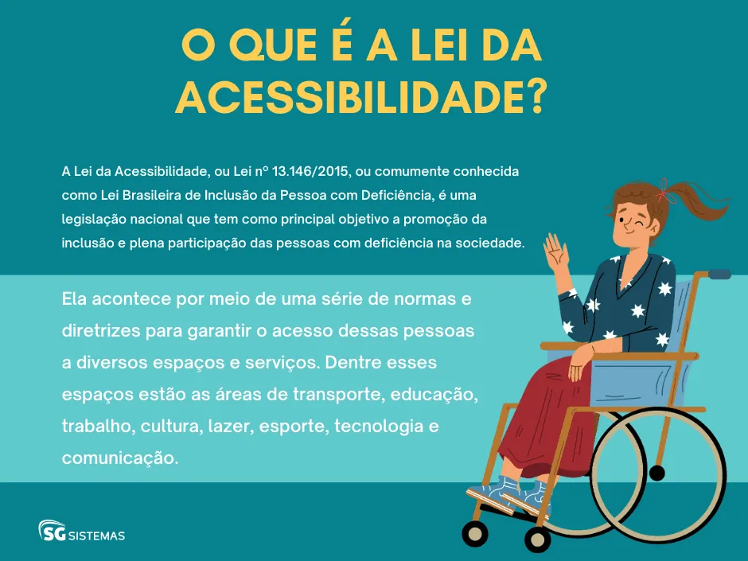
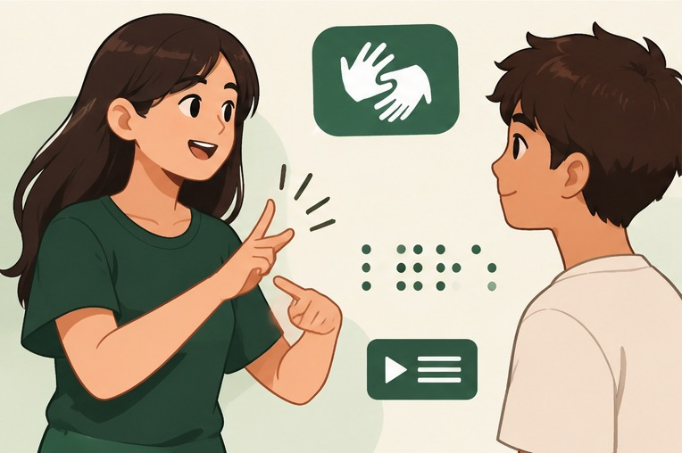

Comunicar é incluir
Uma informação só cumpre seu papel quando pode chegar às pessoas. Por isso, é importante oferecer diferentes formatos e evitar barreiras de linguagem, audição, visão ou compreensão.
Recursos de comunicação
- Libras: a Língua Brasileira de Sinais é uma língua visual-motora, com estrutura gramatical própria, utilizada por muitas pessoas surdas no Brasil.
- Braille: sistema de leitura e escrita tátil formado por combinações de pontos em relevo.
- Comunicação aumentativa e alternativa: reúne recursos e estratégias que complementam ou possibilitam a comunicação de pessoas com necessidades complexas de comunicação.
- Linguagem simples: organiza a informação com palavras conhecidas, frases diretas e estrutura clara.
- Legendas: tornam conteúdos audiovisuais mais acessíveis a pessoas surdas ou com deficiência auditiva e também ajudam em ambientes ruidosos.
Como se comunicar com respeito?
Fale diretamente com a pessoa, respeite o tempo de resposta, não interrompa e não suponha que todas as pessoas com a mesma deficiência utilizam os mesmos recursos. Se não entender algo, peça que a pessoa repita ou explique de outra maneira.
Informação em formatos variados
Materiais importantes podem ser disponibilizados em texto digital acessível, áudio, vídeo legendado, Libras ou formatos táteis, conforme o público e o contexto. A escolha deve considerar as necessidades das pessoas que utilizarão a informação.
Uma atitude simples: em uma apresentação, fale de frente para o público, use linguagem clara e disponibilize os materiais com antecedência em formato acessível.